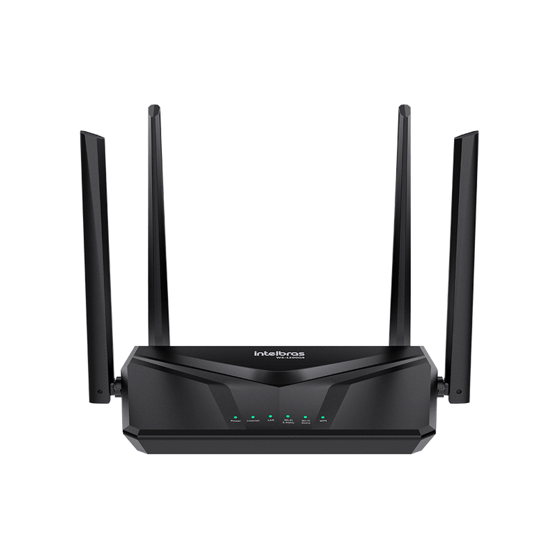

Ir para a área de trabalho
NL
NetLab Escolar
Laboratório de redes

Comece sua primeira rede
Adicione Internet, Roteador, Switch e computadores.
Ferramenta Selecionar ativa
Conecte a Internet ao Roteador para ativar a rede.
×
1
Etapa 1 de 4
Adicione equipamentos
Não mostrar novamente
Pular tutorial
Próxima